Polish Golden Age: From Emerging to Leading
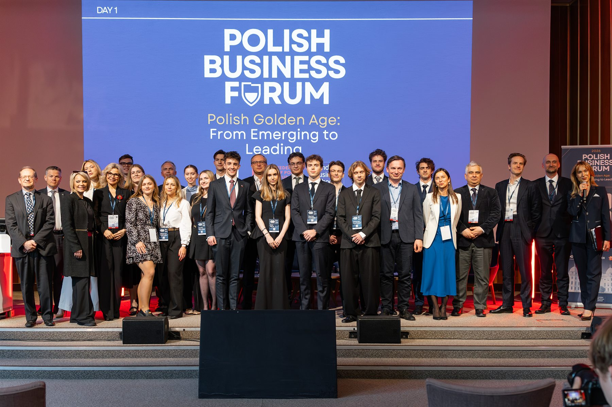
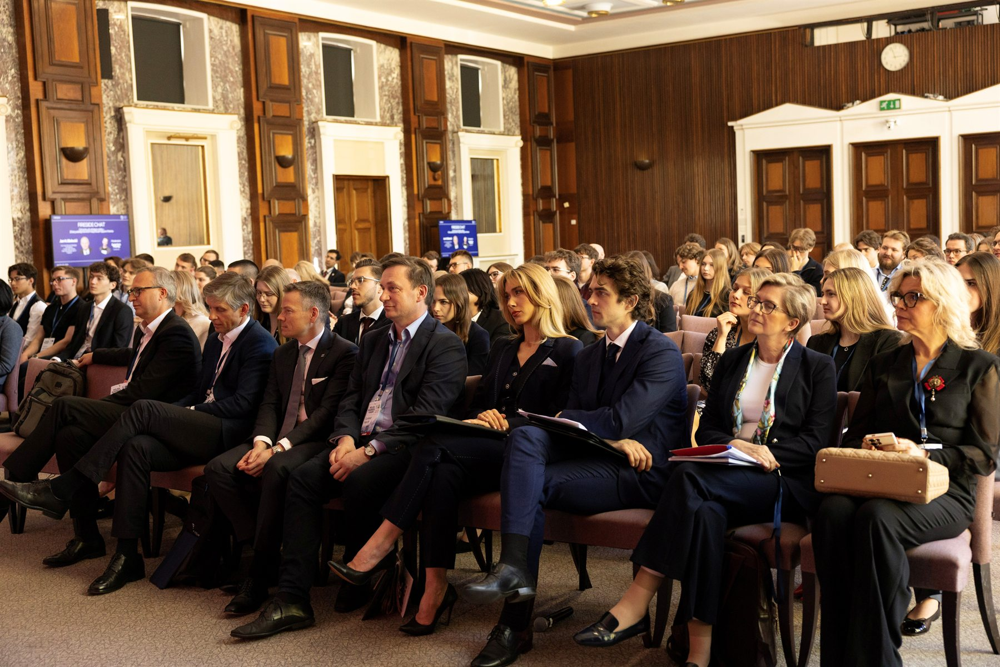
Polish Business Forum 2026 was the inaugural edition of a new flagship conference organised by the Federation of Polish Student Societies in the UK and hosted at London Business School on 24–25 April 2026.
Building on the long-standing legacy of the Polish Economic Forum, the event brought together over 300 students, young professionals, business leaders, investors, entrepreneurs, policymakers, and academics to discuss Poland's growing role in the European and global economy. The conference was held under the theme “Polish Golden Age: From Emerging to Leading”, exploring how Poland can transform decades of rapid economic growth into lasting economic, technological, and geopolitical leadership.
Over two days, participants engaged with a diverse programme of keynote speeches, panel discussions, workshops, networking events, a career fair, and the inaugural Polish Business Forum Ball. Discussions focused on technology and artificial intelligence, venture capital and entrepreneurship, capital markets, financial innovation, economic competitiveness, leadership development, and European security.
The speaker lineup featured some of the most influential figures from business, finance, academia, and public life. Sessions included discussions with investors from Goldman Sachs, Morgan Stanley, PKO TFI, CVI and Bossalini Capital, technology leaders from Microsoft, Synerise and Creotech, senior representatives of financial institutions including KNF, VeloBank and EBRD, as well as leading economists, entrepreneurs, diplomats and public policy experts.
The programme also featured conversations with former Prime Minister Jan Krzysztof Bielecki, historian Sir Norman Davies and economist Marcin Piątkowski.
A key objective of the conference was to strengthen connections between the Polish diaspora, the United Kingdom's leading universities, and Poland's business ecosystem. Participants represented institutions including London Business School, LSE, Oxford, Cambridge, Imperial College London and UCL, creating a unique platform for networking, career development and the exchange of ideas.
Polish Business Forum 2026 demonstrated the ability of Polish students in the UK to organise a high-profile international event and created a new platform for promoting Poland's economic achievements, entrepreneurial talent and future ambitions on the global stage. As the next chapter in a tradition spanning more than a decade, the Forum established itself as one of the most significant Polish student-led business events held outside Poland.
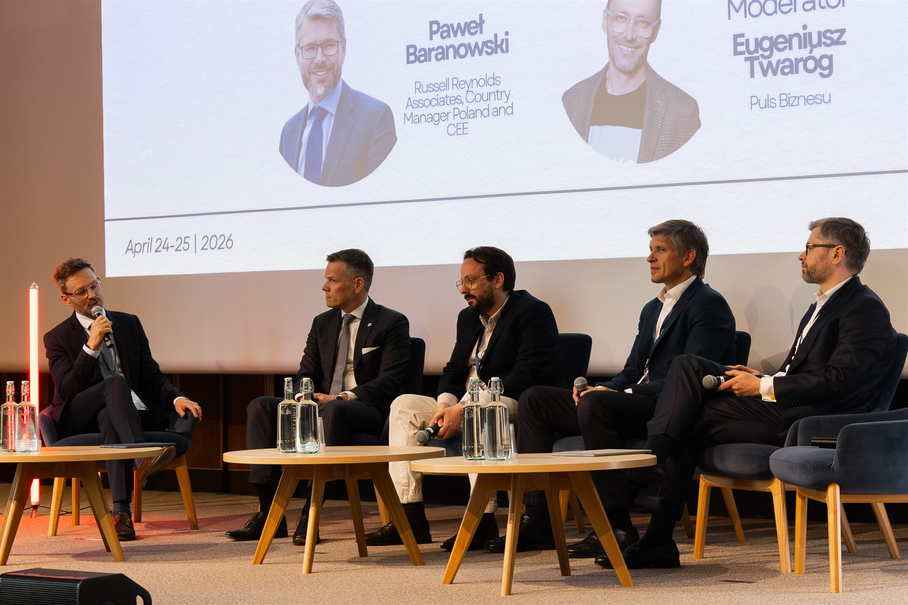
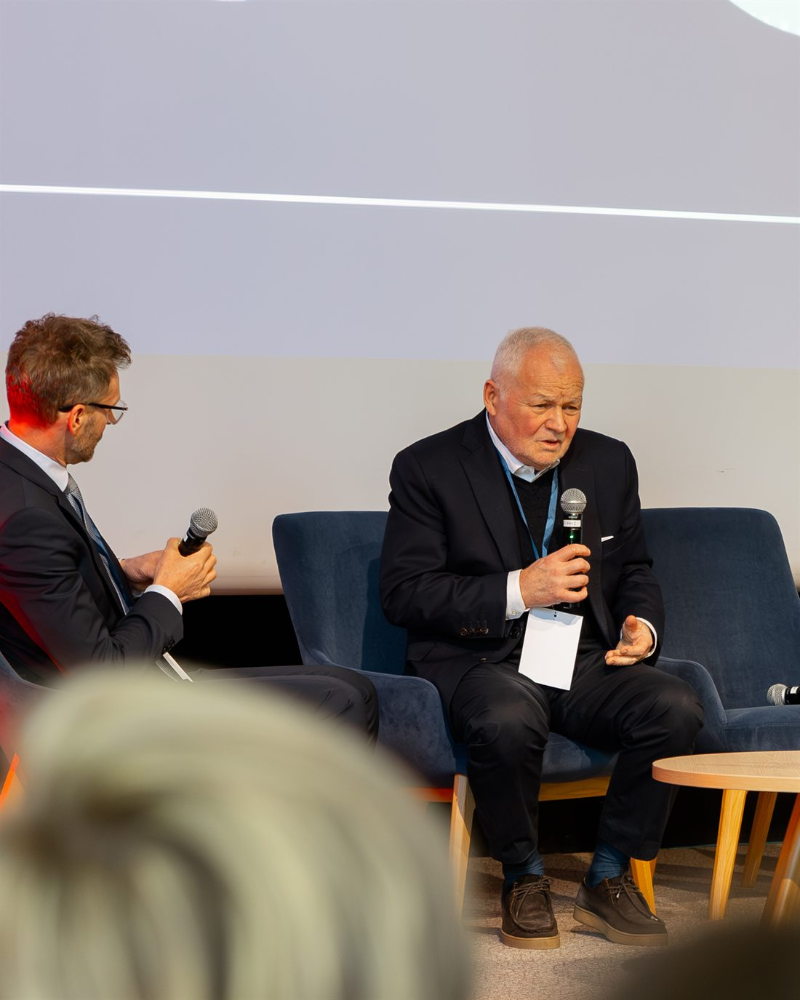
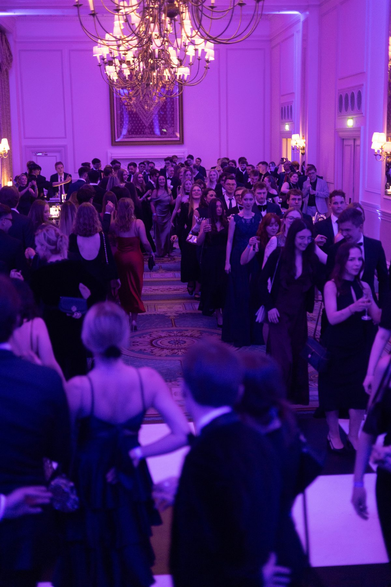
The inaugural Polish Business Forum Ball brought delegates, speakers and partners together for a grand black-tie evening at The Landmark London — one of the capital's most storied five-star hotels.
The night opened in true Polish tradition with the polonez, before dinner, speeches and dancing carried the Forum's conversations long past midnight. It was the moment the conference became a community.
The Forum was imagined, founded and delivered by a small team of students who carried it from a first conversation to a 300-person international conference.
And behind them stood the entire Federation committee — the officers and volunteers whose months of work on partnerships, marketing, logistics and events made the Forum possible.
Meet the full team →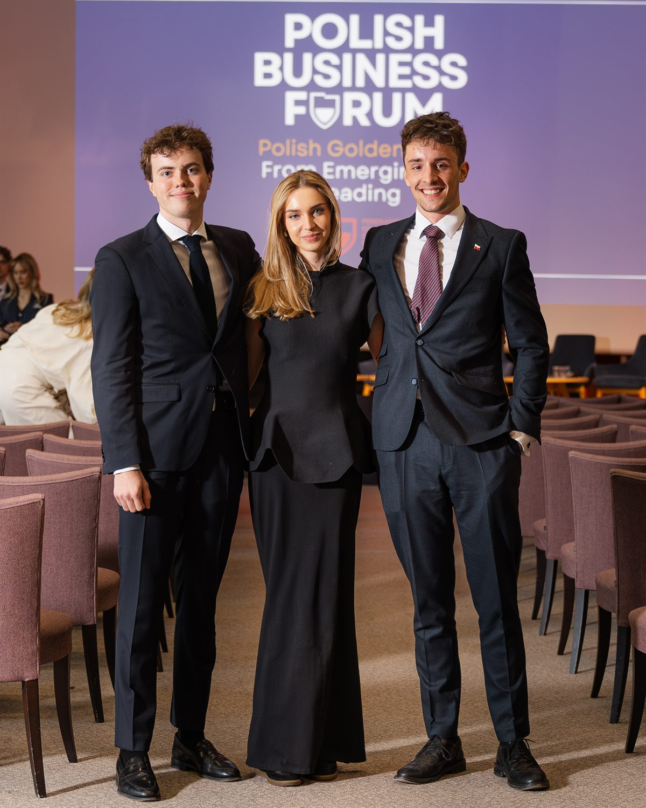
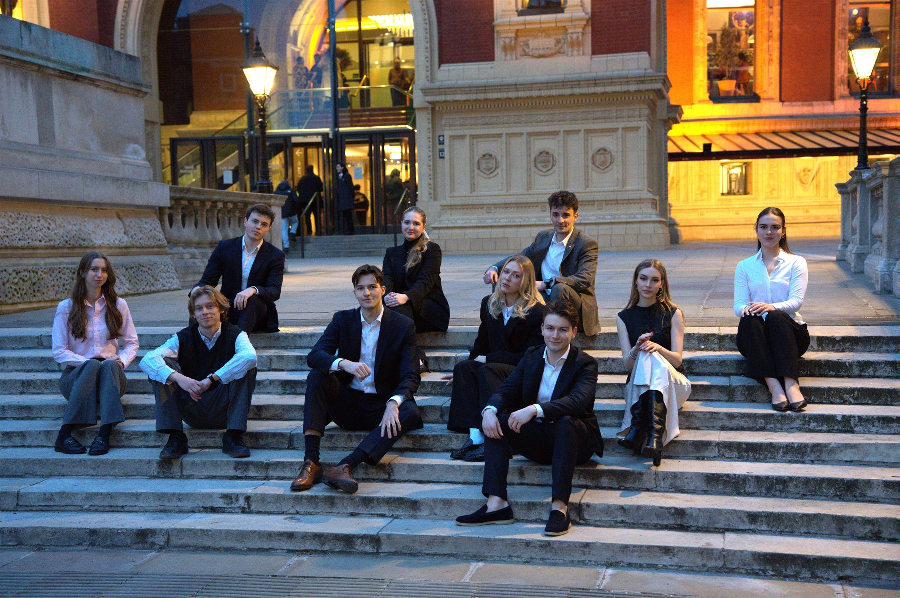
The Forum's programme, career fair and Ball were brought to life by the organisations below. Use the arrows to browse each strip at your own pace.
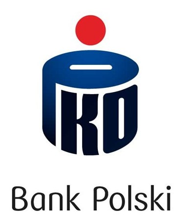
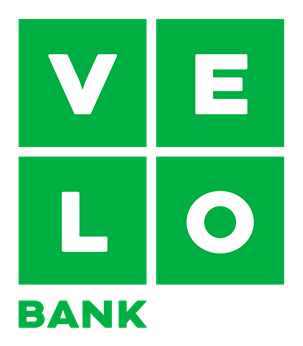
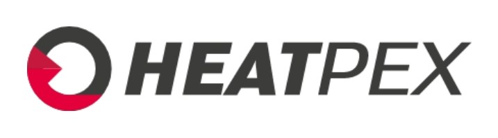
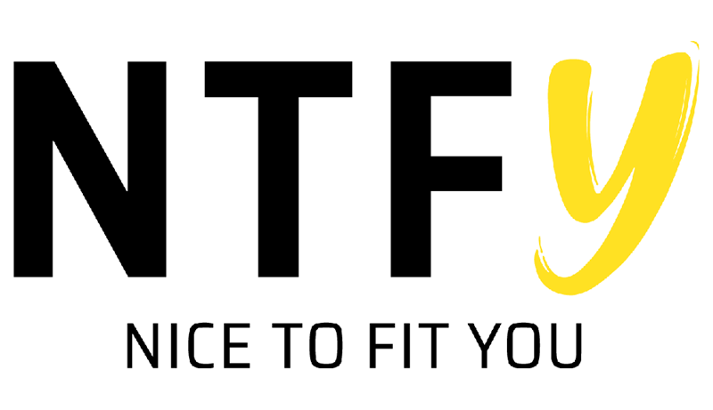
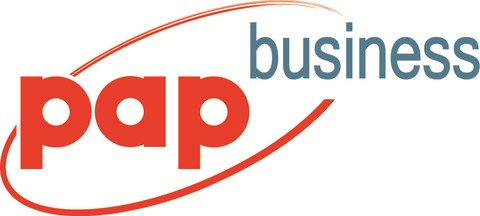
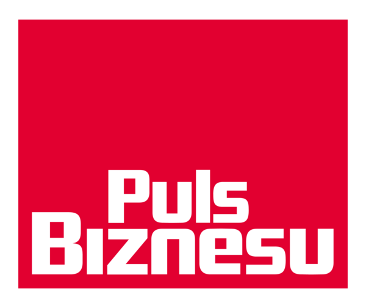

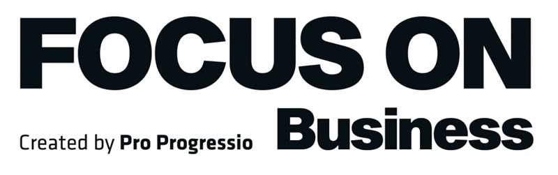
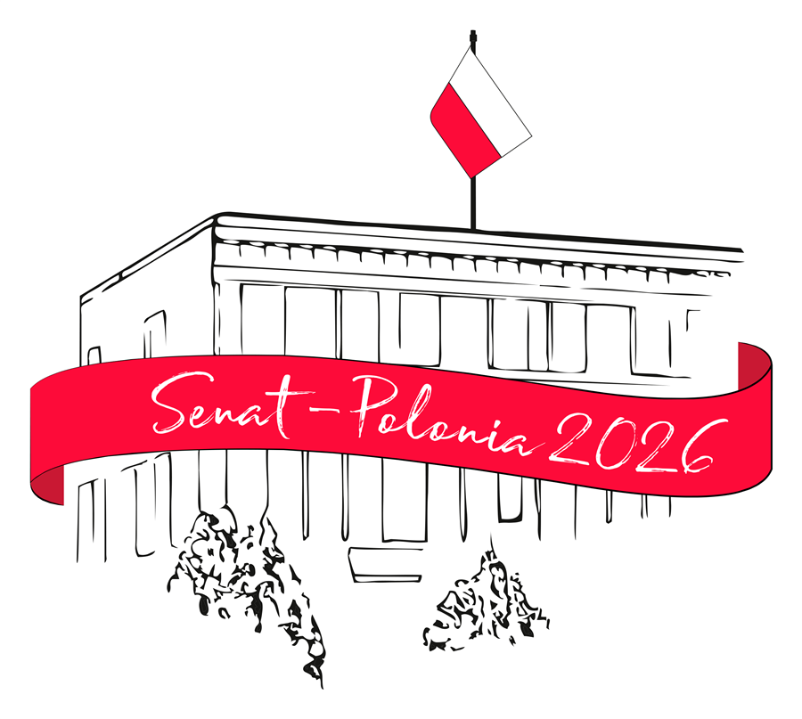
Project co-financed as part of the care of the Senate of the Republic of Poland for the Polish diaspora and Poles abroad in 2026.
Both days were captured by two brilliant photographers. Browse their full galleries and download your photos below.
The official conference gallery. When downloading a photo, enter your own email address — the gallery PIN is 8409
Open the gallery →Full coverage of both conference days and the Forum Ball at The Landmark London, available to browse and download on Google Drive.
Open the gallery →